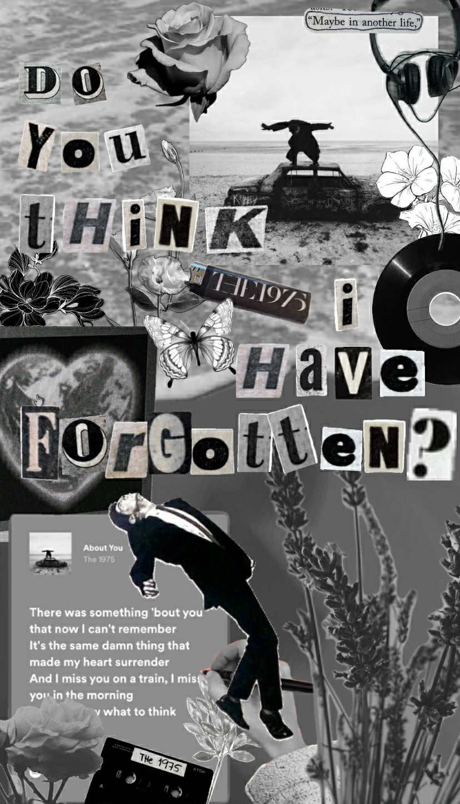

The 1975 is a British pop-rock band formed in 2002 by Matty Healy, Adam Hann, Ross MacDonald, and George Daniel. After years of performing in local clubs under various names, the band settled on "The 1975" in 2012, a name inspired by a phrase from a Jack Kerouac book. They gained significant attention with their 2012-2013 EP releases and their 2013 self-titled debut album, which topped the UK charts. The band is known for its genre-hopping approach, evolving sound, and Matty Healy's distinctive performance style.
The 1975's most notable works include their critically acclaimed, UK No. 1 albums: The 1975 (2013), I Like It When You Sleep, for You Are So Beautiful yet So Unaware of It (2016), A Brief Inquiry into Online Relationships (2018), and Notes on a Conditional Form (2020), as well as the opening track "The 1975" from the latter. The band also has hit songs like "Sex," "Somebody Else," and "Chocolate" to their name.
I chose this band because their songs Falling for You and About You left a lasting mark on me—songs I even dedicated to my girlfriend. We both listen to this band together, and just like the other bands I admire, their vibe and instrumentation bring a calming feeling that truly resonates with me as a music lover.